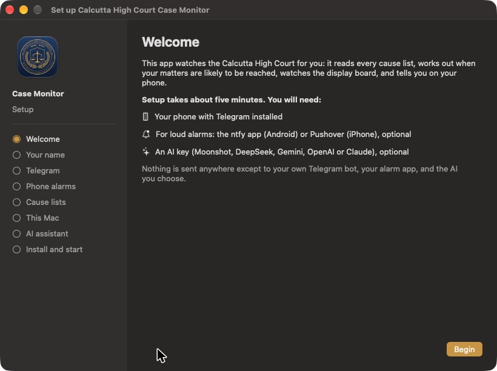
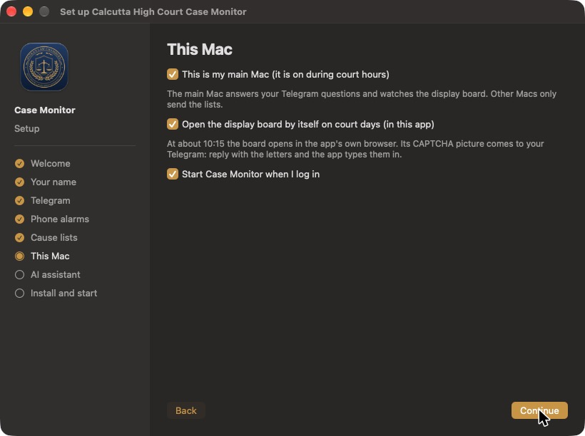
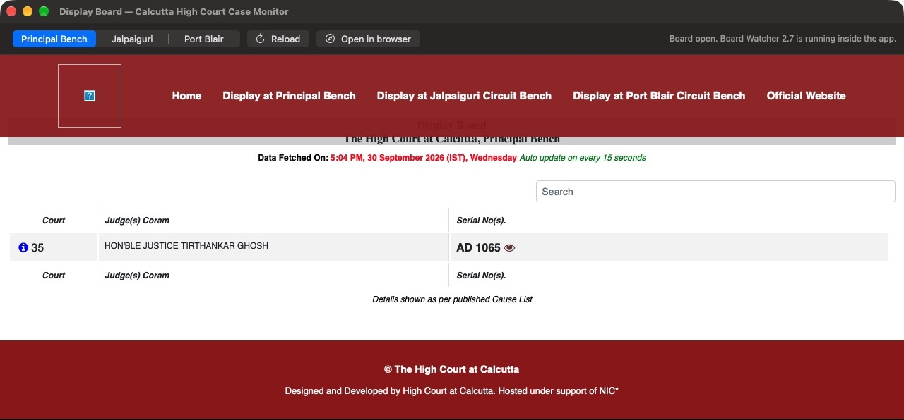
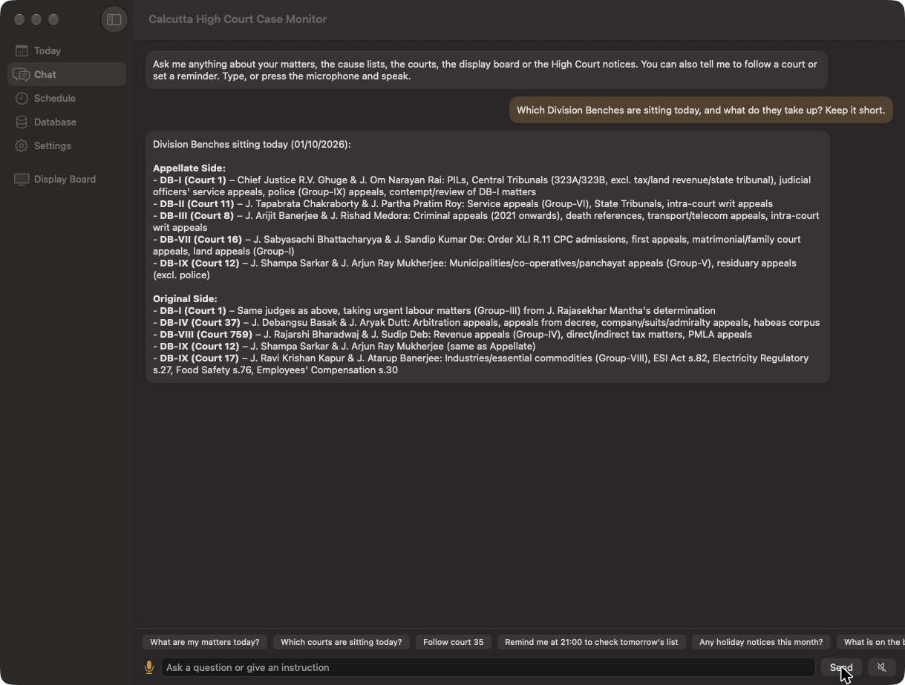
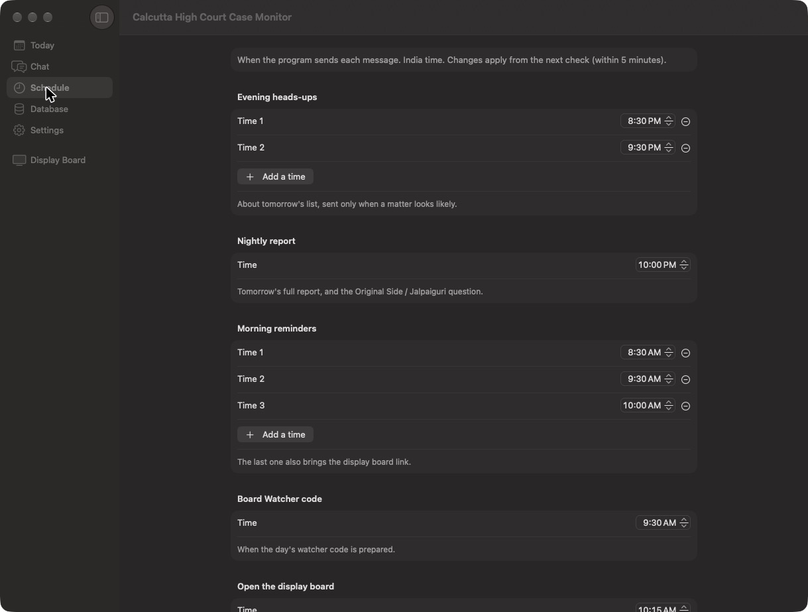
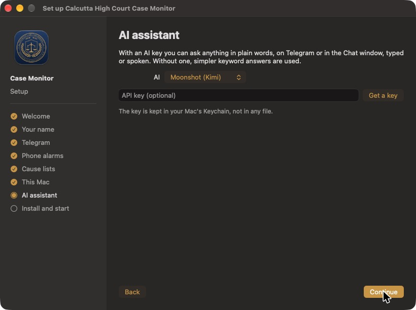

What it does
Every night the app reads the Calcutta High Court's cause lists, finds your matters, and works out how likely each one is to be reached, from the Bench's determination, its notes and the day's timetable. In the morning it reminds you. At about 10:15 it opens the official display board inside the app, watches it, and rings your phone when your item is near.
📋 Nightly analysis
Daily, supplementary and monthly lists: every matter with its chance of being reached, and why.
📺 Built-in display board
The official board runs inside the app with the Board Watcher. No Chrome, no extension.
🔔 Telegram and alarms
Heads-up at night, morning reminders, a loud alarm when your item is near or its heading closes.
🔐 CAPTCHA on your phone
The board's CAPTCHA picture comes to Telegram. Reply with the letters and the app types them in.
✨ AI assistant
Ask anything in plain words, typed or spoken: Moonshot, DeepSeek, Gemini, OpenAI or Claude, with your own key.
🗓️ Roster and notices
Roster changes, modified determinations, early-rising and holiday notices that concern your courts.
🕘 Your schedule
Choose when each heads-up, report, reminder and digest comes.
🗄️ Your database
Every list, board reading and notice kept on your Mac, with a calendar to clear old data.
⚙️ Five-minute setup
A step-by-step window does everything. No Terminal.
Install in three steps
- Download the app with the button above and open the downloaded file.
- Drag Calcutta High Court Case Monitor into the Applications folder.
- Open it from Applications. The first time, macOS says it cannot check the app, because it is not sold through Apple. Open System Settings → Privacy & Security, scroll down and click Open Anyway next to the app's name, then Open. This is needed only once.
The setup window then opens by itself. Look for the courthouse icon in the menu bar at the top of the screen: everything is there. You need a Mac that is on during court hours, Telegram on your phone, and, if you like, the ntfy app (Android) or Pushover (iPhone) for loud alarms and an AI key.
Setting up and using it






Today shows your matters for the day with the Bench, what is on the board now and the full report. Database shows what is stored and clears old data by date (a backup is made first). Settings holds everything from the setup, plus pause alerts, logs and updates. On Telegram you can ask the same questions, send notices as text, photo or PDF, and reply to the board's CAPTCHA picture.
Privacy
Everything stays on your Mac. The app reads only the Calcutta High Court's public cause lists, notices and display board. Messages go only to your own Telegram bot and alarm app, and questions only to the AI service you choose, with your own key. The display board's CAPTCHA is always typed by you. Quitting the app does not stop your alerts: the background checks keep running.
About
Designed and built by Advocate Sudip Patra, Founder & Managing Partner, Patra's Law Chambers: a litigation practice in Kolkata and New Delhi, before the Supreme Court of India, the Calcutta High Court and tribunals including the CAT, AFT, DRT/DRAT and NCLT.
| Kolkata | NICCO House, 6th Floor, 2 Hare Street, Kolkata 700001 |
| New Delhi | 4455/5, 1st Floor, Gali Shahid Bhagat Singh, Paharganj, New Delhi 110055 |
| Phone / WhatsApp | +91 890 222 4444 |
| Website | patraslawchambers.com · About us · Contact |